Start with what matters now.
Daily Thread, deadlines, schedule context, habits, and the next step come together in one focused view.
Sutra is the student OS: one private, local-first student workspace that brings school, projects, tasks, notes, and planning together. Not another collection of disconnected tools, so less energy goes into maintaining the system, and more into the work itself. Your data stays on your device.
No account required · Local-first by design
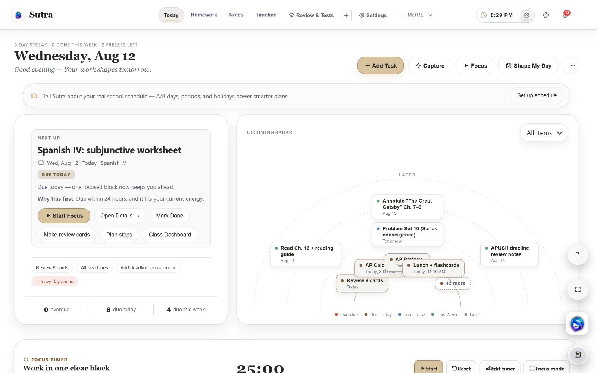
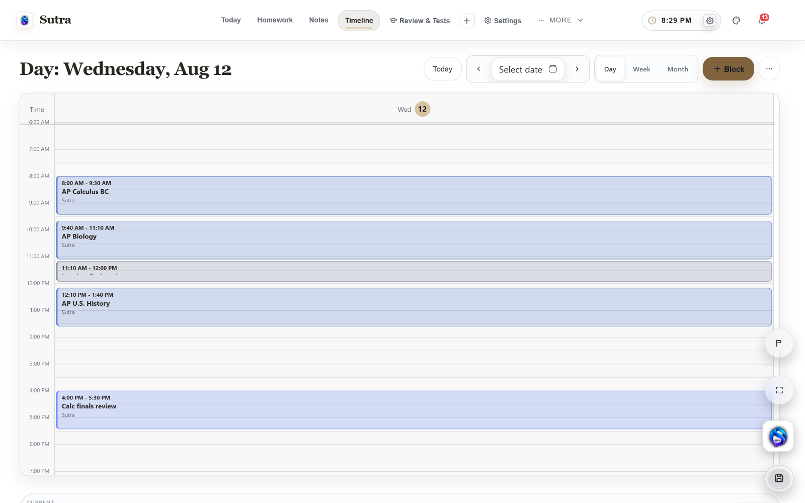
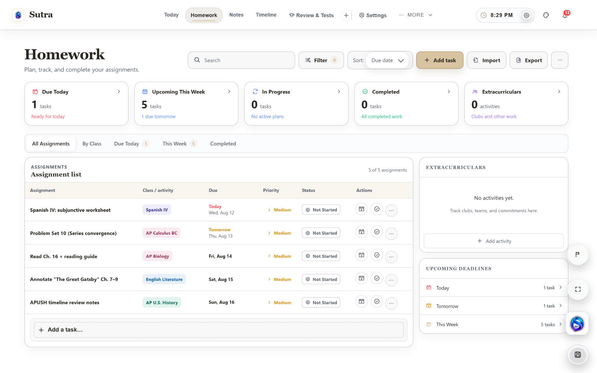
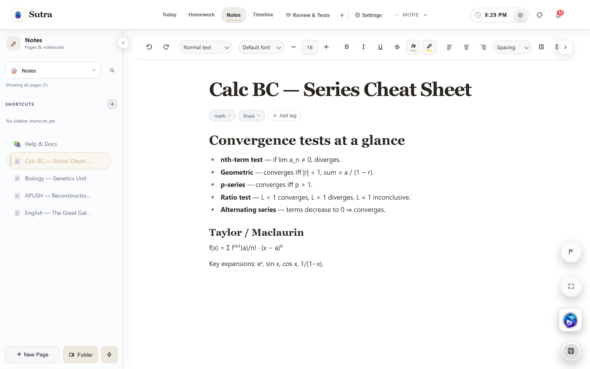
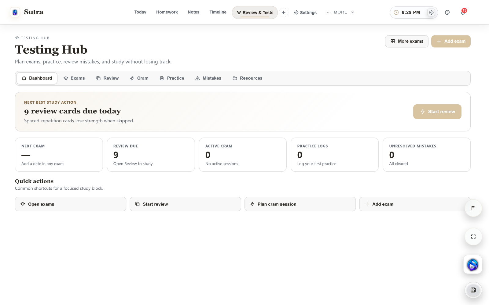
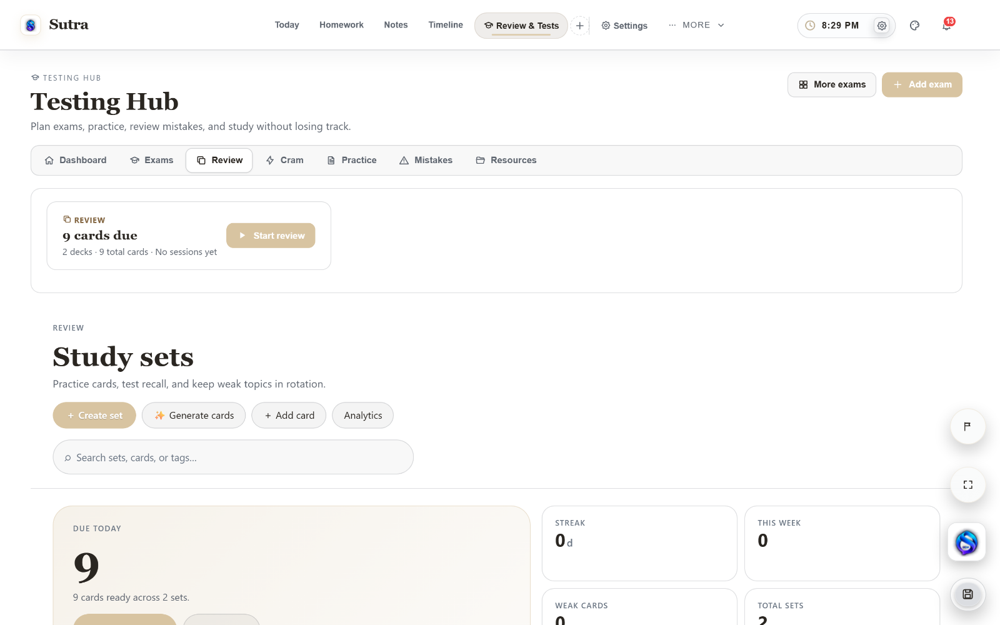
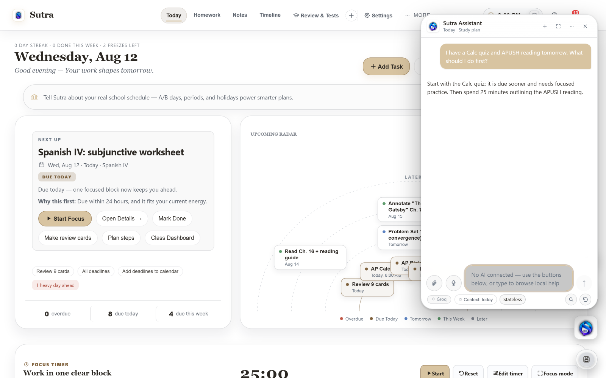
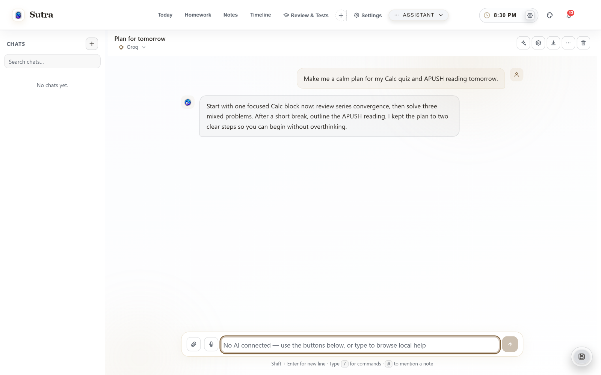
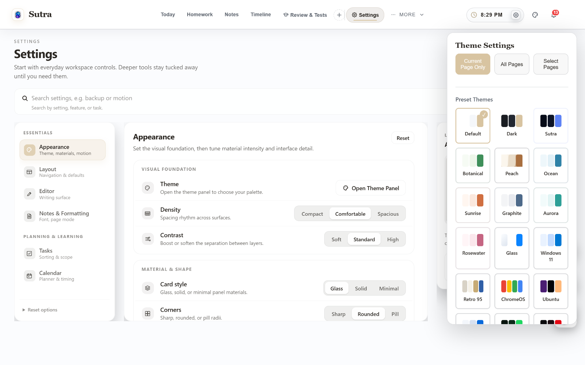
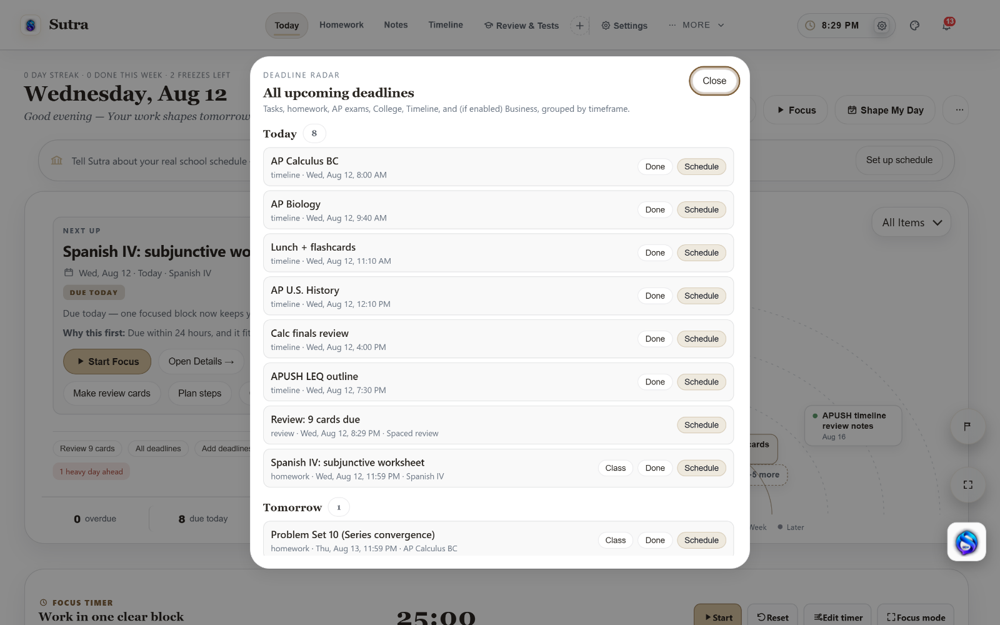
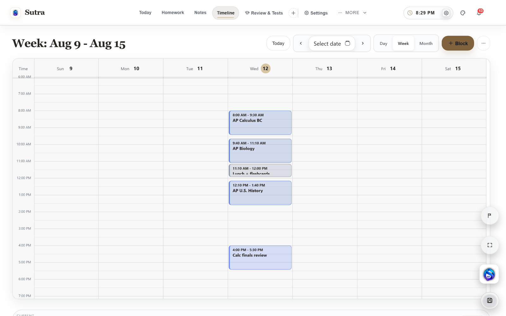
Notes in one app. Assignments in another. Timeline blocks somewhere else. Testing resources, review cards, deadlines, and study plans spread across separate tools. Then a single thread draws them together — into Sutra.
Most productivity tools optimize one part of the workflow. Sutra connects the whole system — planning, notes, deadlines, and review, together. Your workspace never leaves your device.
Daily Thread, deadlines, schedule context, habits, and the next step come together in one focused view.
Capture structured notes, link ideas, and keep planning context close to the work itself.
Plan focused work blocks, see the shape of the day, and keep deadlines connected to an actual schedule.
Track classes, due dates, priorities, and study work from the same system.
Keep exam resources, testing workflows, and progress signals organized in one place.
Surface due material, revisit weak areas, and make studying an intentional loop rather than a last-minute scramble.
Cram mode helps turn a broad workload into a focused study sequence.
Sutra connects your school schedule, assignments, grades, and long-term work inside the same local-first workspace.
Rotating A/B days, cycle schedules, bell schedules, holidays, and real study windows.
Forecast course grades, GPA, missing-work impact, and what score you need on the final.
Import syllabus or calendar information, review the extracted items, then approve what enters the workspace.
Break major assignments into milestones, subtasks, rubric criteria, linked notes, and scheduled work blocks.
Sutra Intelligence reads local workspace signals on your device. When you choose to ask for AI help, Sutra Assistant sends only the context you allow to the provider you select. Proposed changes stay reviewable until you approve them.
AI is optional — Sutra works fully without it.
Every part of Sutra feeds the same calm, local-first workflow — notes inform review, deadlines connect to planning, and nothing requires a separate app.
Nested pages, slash commands, embeds, tables, handwriting, and clean typography — with live word counts and autosave.
Commit priorities and keep momentum visible with built-in streak history.
Every upcoming deadline across classes, exams, and tasks, grouped by timeframe.
Map real work sessions and routines, and keep deadlines tied to an actual schedule.
A focus timer, focus mode, and study sessions that protect deep work.
Promote the views you need right now — Student, AP Crunch, Writing, and more — without losing the rest.
Sutra is a single local-first web app — the same workspace runs in your phone's browser, with the Today view, deadlines, notes, and review laid out for a smaller screen. Each device keeps its own local copy; move a workspace between devices with an encrypted .sutra export, or turn on optional Google Drive sync.
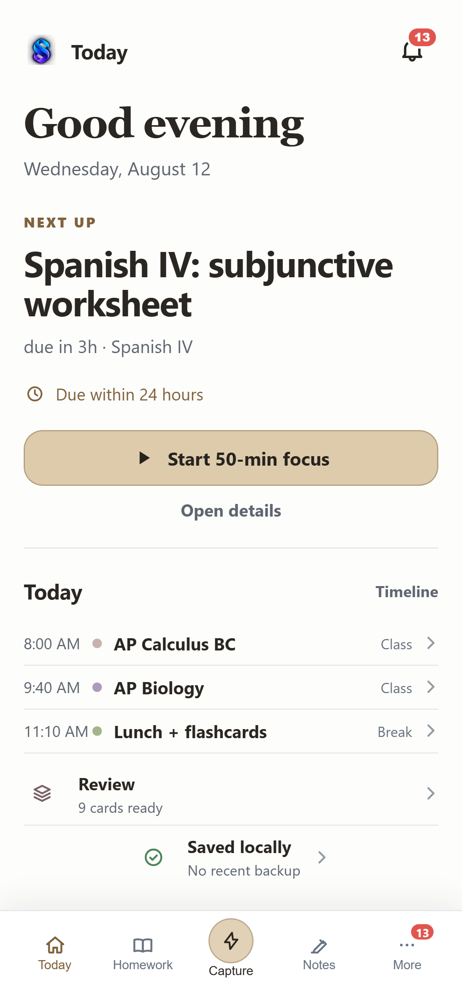
Sutra stores your workspace locally in your browser by default — no account required. Optional features such as encrypted Google Drive sync, remote AI requests, and feedback submissions can send the information you choose to external services, and Sutra shows you when that happens. When you want a backup or a portable copy, export a password-encrypted .sutra workspace file (older unencrypted .sutra and .atelier backups still import).
.sutra backupExport a full password-protected workspace file anytime — older unencrypted .sutra and .atelier files still import.I built Sutra because the tools I used never fit the full student workflow. Notes lived in one place, assignments in another, calendars somewhere else, and most productivity apps felt either too bloated or too generic. Sutra is the calm, private, local-first workspace that was missing — built around how students actually work.
Start with one private workspace for planning, writing, deadlines, and study.
Public beta · No account required · Local-first by design